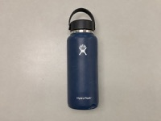
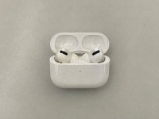
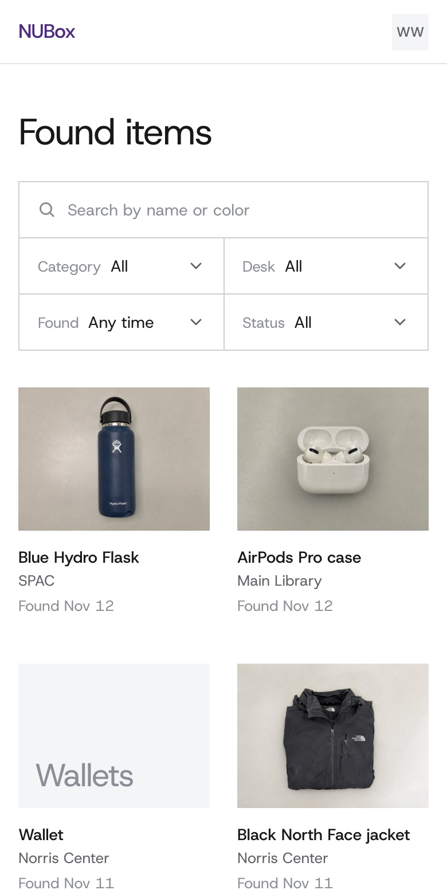

Search every desk at once
Browse items from all the desks together. Search by name or color, and filter by category, desk, date found, and status.
You don’t have to upload anything. Desk staff log what they find.
See what the lost-and-found desks across Northwestern’s Evanston campus
are holding, with a photo of each item and the desk that has it.
Evanston campus / Lost-and-found desks
Today: check each desk. With NUBox: check once.
NUBox catalog
Found items

Blue Hydro FlaskSPAC · Found Nov 12
AirPods Pro caseMain Library · Found Nov 12Sign in with a Northwestern Google account.
For anyone with a Northwestern account who has lost something
and isn’t sure where.
Browse items from all the desks together. Search by name or color, and filter by category, desk, date found, and status.
You don’t have to upload anything. Desk staff log what they find.
Each item has a photo, a short description, and where it was found. Sensitive items such as wallets and IDs show a category icon instead of a photo.
The item page shows the desk’s location, hours, contact, what to bring, and the item number to ask for.
Staff ask you to describe the item, then record the pickup with your name, NetID, and how you showed it’s yours.
App screens

Staff use the separate Staff sign in button.
Access is checked by Firebase security rules, not only by the app.
NUBox is a Northwestern CS392 course prototype. It runs in a mobile browser and is free to use.
GitHub repository